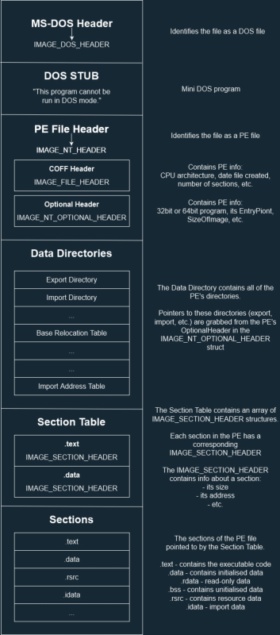

# PE File Format
If you understand the PE file format, you understand a lot about how windows binaries work.
Resources•
http://www.skyfree.org/linux/references/coff.pdf - PE Specification - BEST PLACE TO LOOK
•
https://www.youtube.com/watch?v=l6GjU8fm8sM - MalwareAnalysisForHedgehogs
•
https://resources.infosecinstitute.com/2-malware-researchers-handbook-demystifying-pe-file/ - Basic
•
https://en.wikibooks.org/wiki/X86_Disassembly/Windows_Executable_Files#File_Format - Indepth but good
• Matt Pietrek - updated version of 1994 article
◇ Part 1 -
http://www.delphibasics.info/home/delphibasicsarticles/anin-depthlookintothewin32portableexecutablefileformat-part1 ◇ Part 2 -
http://www.delphibasics.info/home/delphibasicsarticles/anin-depthlookintothewin32portableexecutablefileformat-part2•
https://docs.microsoft.com/en-us/windows/win32/debug/pe-format - Microsoft Official
•
https://blog.kowalczyk.info/articles/pefileformat.html•
https://www.ired.team/miscellaneous-reversing-forensics/pe-file-header-parser-in-c++#code•
https://raw.githubusercontent.com/thecyberhex/books/master/Reverse%20Engineering%20for%20Beginners.pdf - Chatper 68 - Windows NT
• ARTeam's PE File Format Compendium
• Challenge to create smallest PE file which downloads a file and executes it.
◇ Has interesting findings about PE file format
◇
https://webserver2.tecgraf.puc-rio.br/~ismael/Cursos/YC++/apostilas/win32_xcoff_pe/tyne-example/Tiny%20PE.htmJust putting these here. They might help me out.
•
https://docs.microsoft.com/en-us/windows/win32/api/dbghelp/nf-dbghelp-imagervatosection•
https://docs.microsoft.com/en-us/windows/win32/api/dbghelp/nf-dbghelp-imagedirectoryentrytodataex•
https://docs.microsoft.com/en-us/windows/win32/api/dbghelp/nf-dbghelp-imagervatova## Overview
Sometimes it's easier to understand the PE File Format by just looking at the C structs.
So:
DOS HeaderIMAGE_DOS_HEADER https://www.nirsoft.net/kernel_struct/vista/IMAGE_DOS_HEADER.htmlPE HeaderIMAGE_NT_HEADERhttps://docs.microsoft.com/en-us/windows/win32/api/winnt/ns-winnt-image_nt_headers32COFF HeaderIMAGE_FILE_HEADER https://docs.microsoft.com/en-us/windows/win32/api/winnt/ns-winnt-image_file_headerPE Optional HeaderIMAGE_OPTIONAL_HEADERhttps://docs.microsoft.com/en-us/windows/win32/api/winnt/ns-winnt-image_optional_header32Data DirectoriesImports
IMAGE_IMPORT_DESCRIPTORhttp://pinvoke.net/default.aspx/Structures/IMAGE_IMPORT_DESCRIPTOR.htmlExports
IMAGE_EXPORT_DIRECTORYhttp://pinvoke.net/default.aspx/Structures.IMAGE_EXPORT_DIRECTORYSectionsIMAGE_SECTION_HEADERhttps://docs.microsoft.com/en-us/windows/win32/api/winnt/ns-winnt-image_section_header## Intro
PE stands for Portable Executable.
The PE file format contains all the information Windows needs to load the executable into memory and execute it.
They're called Portable Executables because they were designed by Microsoft to run on all Windows flavours and support all CPUs.
A 32-bit PE is
PE32A 64-bit PE is
PE32+.exe and
.dll files both use the exact same PE format.
Here's a small diagram:
## Overview
There are multiple sections to a PE file.
I'll only cover the interesting bits of each section.
I find it easier to understand the PE file format from a code point of view, so that's what I'll do.
NOTE: Read the file into a buffer first. All the code below is reading raw addresses not virtual addresses.
### MS-DOS Header
The MS-DOS Header is at the start of every PE file.
It identifies the file as a DOS file.
IMAGE_DOS_HEADERhttps://www.nirsoft.net/kernel_struct/vista/IMAGE_DOS_HEADER.htmlPIMAGE_DOS_HEADER dos_header = NULL;
dos_header = file_buffer;
printf("DOS header @ 0x%p \n", dos_header);
printf("\t e_magic: 0x%x \n", dos_header->e_magic);
printf("\t e_lfanew: 0x%x \n", dos_header->e_lfanew);
Some values of interest are:
•
e_magic ◇ identifies the file as a DOS file
◇ should be
0x5a4d - ASCII for
MZ - Mark Zbikowski - the original architect of MS-DOS
◇
IMAGE_DOS_SIGNATURE stores this constant
•
e_lfanew ◇ contains the offset to the PE header- the
IMAGE_NT_HEADERS struct
### DOS Stub
This follows just after the MS-DOS Header.
This is a mini DOS program - a series of machine instructions - written by Microsoft to ensure backwards compatibility.
If a 32bit Windows binary is run in a 16-bit DOS environment, this program will display the error message: "This program cannot be run in DOS mode.", and then terminate.
### PE Header
The PE Header identifies the file as a PE file, and contains offsets to the COFF Header and PE Optional Header.
IMAGE_NT_HEADERhttps://docs.microsoft.com/en-us/windows/win32/api/winnt/ns-winnt-image_nt_headers32PIMAGE_DOS_HEADER dos_header = NULL;
PIMAGE_NT_HEADERS pe_header = NULL;
dos_header = file_buffer;
pe_header = (PIMAGE_NT_HEADERS)((DWORD_PTR)dos_header + (DWORD_PTR)dos_header->e_lfanew);
printf("PE header @ 0x%p \n", pe_header);
printf("\t signature: %x \n", pe_header->Signature);
printf("\t offset to COFF header: 0x%p \n", pe_header->FileHeader);
printf("\t offset to PE optional header: 0x%p \n", pe_header->OptionalHeader);
It can also be retrieved with
ImageNtHeaderhttps://docs.microsoft.com/en-us/windows/win32/api/dbghelp/nf-dbghelp-imagentheaderSome values of interest are:
•
Signature ◇ identifies the file as a PE file
◇ should be
"PE\0\0" -
0x4550 ◇
IMAGE_NT_SIGNATURE stores this constant
•
FileHeader ◇ offset to the COFF header
•
OptionalHeader ◇ offset to the PE Optional Header
### COFF Header
The COFF header contains info about the PE file: the computer architecture, the number of sections, time/date it was compiled, etc.
IMAGE_FILE_HEADERhttps://docs.microsoft.com/en-us/windows/win32/api/winnt/ns-winnt-image_file_headerPIMAGE_DOS_HEADER dos_header = NULL;
PIMAGE_NT_HEADERS pe_header = NULL;
PIMAGE_FILE_HEADER coff_header = NULL;
dos_header = file_buffer;
pe_header = (PIMAGE_NT_HEADERS)((DWORD_PTR)dos_header + (DWORD_PTR)dos_header->e_lfanew);
coff_header = &pe_header->FileHeader;
printf("COFF header @ 0x%p \n", &pe_header->FileHeader);
printf("\t computer arch 0x%x \n", pe_header->FileHeader.Machine);
printf("\t no. of sections: %d \n", pe_header->FileHeader.NumberOfSections);
printf("\t time created: %x \n", pe_header->FileHeader.TimeDateStamp);
Some values of interest are:
•
Machine ◇ identifies the architecture of the computer
◇
0x014c = x86
0x8664 = x64
### PE Optional Header
The PE Optiona Header a lot info related to loading the PE into memory: base address, entry point, etc.
IMAGE_OPTIONAL_HEADERhttps://docs.microsoft.com/en-us/windows/win32/api/winnt/ns-winnt-image_optional_header32PIMAGE_DOS_HEADER dos_header = NULL;
PIMAGE_NT_HEADERS pe_header = NULL;
PIMAGE_FILE_HEADER coff_header = NULL;
dos_header = file_buffer;
pe_header = (PIMAGE_NT_HEADERS)((DWORD_PTR)dos_header + (DWORD_PTR)dos_header->e_lfanew);
coff_header = &pe_header->FileHeader;
pe_optional_header = &pe_header->OptionalHeader;
printf("PE optional header @ 0x%p \n", &pe_header->OptionalHeader);
printf("\t magic: 0x%x \n", pe_header->OptionalHeader.Magic);
printf("\t entry point: 0x%p \n", pe_header->OptionalHeader.AddressOfEntryPoint);
printf("\t base address: 0x%p \n", pe_header->OptionalHeader.ImageBase);
printf("\t subsystem: %d \n", pe_header->OptionalHeader.Subsystem);
Some values of interest are:
•
Magic ◇ whether the file is 32bit or 64bit
◇
0x10b = PE32
0x20b = PE64
•
AddressOfEntryPoint ◇ offset to the entry point function
•
ImageBase ◇ the preferred base address of the PE when it's loaded into memory
◇
0x00400000 is default for 32bit PEs
◇
0x0000000140000000 is default for 64bit PEs
•
Subsystem ◇ whether the PE is a GUI applicatoin, a console application, a boot application, etc.
◇ 2 = GUI
◇ 3 = Console
### Data Directories
All of the possible data directories are listed here (towards the bottom):
https://docs.microsoft.com/en-us/windows/win32/api/winnt/ns-winnt-image_optional_header32Some interesting ones:
IMAGE_DIRECTORY_ENTRY_BASERELOCIMAGE_DIRECTORY_ENTRY_EXPORTIMAGE_DIRECTORY_ENTRY_IMPORT#### ImportsIMAGE_IMPORT_DESCRIPTORhttp://pinvoke.net/default.aspx/Structures/IMAGE_IMPORT_DESCRIPTOR.html•
Name ◇ contains an offset to the name of imported DLL
•
OriginalFirstThunk ◇ points to the Import Lookup Table
•
FirstThunk ◇ points to the Import Address Table - gets filled with function addresses when PE is loaded
### Section Headers
Immediately following the PE Optional Header are the section headers.
IMAGE_SECTION_HEADERhttps://docs.microsoft.com/en-us/windows/win32/api/winnt/ns-winnt-image_section_headerAn
IMAGE_SECTION_HEADER points to the section in the PE file and describes its size.
Each section in the PE will have a corresponding
IMAGE_SECTION_HEADER struct.
e.g:
• the
.text section will have an
IMAGE_SECTION_HEADER struct
• the
.data section will have an
IMAGE_SECTION_HEADER struct
• etc.
You can grab the first section with
IMAGE_FIRST_SECTIONYou can grab the last section with
(IMAGE_FIRST_SECTION(pe_header) + pe_header->FileHeader.NumberOfSections) - 1;You loop through the sections by incrementing the
IMAGE_SECTION_HEADER by 1 each time.
PIMAGE_DOS_HEADER dos_header = NULL;
PIMAGE_NT_HEADERS pe_header = NULL;
PIMAGE_FILE_HEADER coff_header = NULL;
PIMAGE_SECTION_HEADER section_header = NULL;
dos_header = file_buffer;
pe_header = (PIMAGE_NT_HEADERS)((DWORD_PTR)dos_header + (DWORD_PTR)dos_header->e_lfanew);
coff_header = &pe_header->FileHeader;
pe_optional_header = &pe_header->OptionalHeader;
section_header = IMAGE_FIRST_SECTION(pe_header);
printf("section headers @ 0x%p \n", section_header);
for (int i = 0; i < pe_header->FileHeader.NumberOfSections; i++)
{
printf("\t %s @ 0x%p \n", section_header->Name, section_header);
printf("\t\t size when memory mapped: 0x%x \n", section_header->Misc.VirtualSize);
printf("\t\t address when memory mapped: 0x%x \n", section_header->VirtualAddress);
printf("\t\t size on disk: 0x%x \n", section_header->SizeOfRawData);
printf("\t\t address on disk: 0x%x \n", section_header->PointerToRawData);
printf("\t\t no. of relocations: 0x%x \n", section_header->NumberOfRelocations);
printf("\t\t pointer to relocations: 0x%x \n", section_header->PointerToRelocations);
section_header += 1;
}
Some values of interest are:
•
Misc.PhysicalAddress - apparently this is the file address? (don't know what that means)
- it always seems to be the same value as the size of the section in memory (???)
•
Misc.VirtualSize - size of section when mapped into memory
•
VirtualAddress - the offset to the section when loaded into memory, relative to the image base
•
SizeOfRawData - size of section on disk
•
PointerToRawData - pointer to start of section on disk
•
Characteristics - describes whether section is read, read/write, read/write/executable, etc.
### Sections
Last are the actual sections of the PE file; all of its executable code and data basically.
.text - contains the executable machine code instructions of the program
.data - contains global variables and static local variables that are initialised at compile time
.bss - contains global/static variables that are ARE NOT initialised at compile time
.textbss - enables incremental linking
.rsrc - stores binary objects embedded into the executable (fonts, icons, version info, etc.)
.idata - stores IAT - Import Address Table - and info of how to import functions from other modules
.edata - contains info about exported functions
.reloc - contains a table of relocation records if a binary can't be loaded at its preferred base address.
.rdata - a mixed bag of stuff. If debug enabled, stores debug info